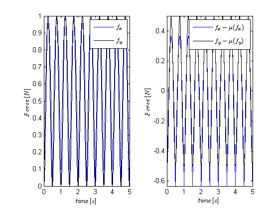
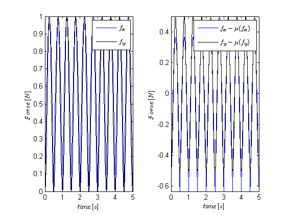

Test the Cov class
Covariates are just like signals with a mean and a standard deviation They have two representations, the default (original representation) and a zero-mean representation
Contents
Example 1: Using Covariates
Create some Data
close all;
t=0:.01:5; t=t';
x=exp(-t);
y=sin(2*pi*t);
z=(-y).^3;
fx=abs(y);
fy=abs(y).^2;
Define labels and plotting properties for each Covariate
dLabels1={'f_x','f_y'};
dLabels2={'x','y','z'};
plotProps = {{' ''g'', ''LineWidth'' ,.5'},... %for x
{' ''k'', ''LineWidth'' ,.5'},... %for y
{' ''b'' '}}; %for z
force = Covariate(t, [fx fy], 'Force', 'time', 's', 'N', dLabels1);
position=Covariate(t,[x y z], 'Position','time','s','cm', dLabels2);
Plot the covariates and change their properties
position.getSigRep.plot('all',plotProps); %same as position.plot plotPropsForce = {{' ''b'' '},{' ''k'' '}}; figure; subplot(1,2,1); force.getSigRep.plot('all',plotPropsForce); % can also set these properties as default by calling % >>force.setPlotProps(plotPropsForce); % >>force.plot; subplot(1,2,2); force.getSigRep('zero-mean').plot('all',plotPropsForce);
 
